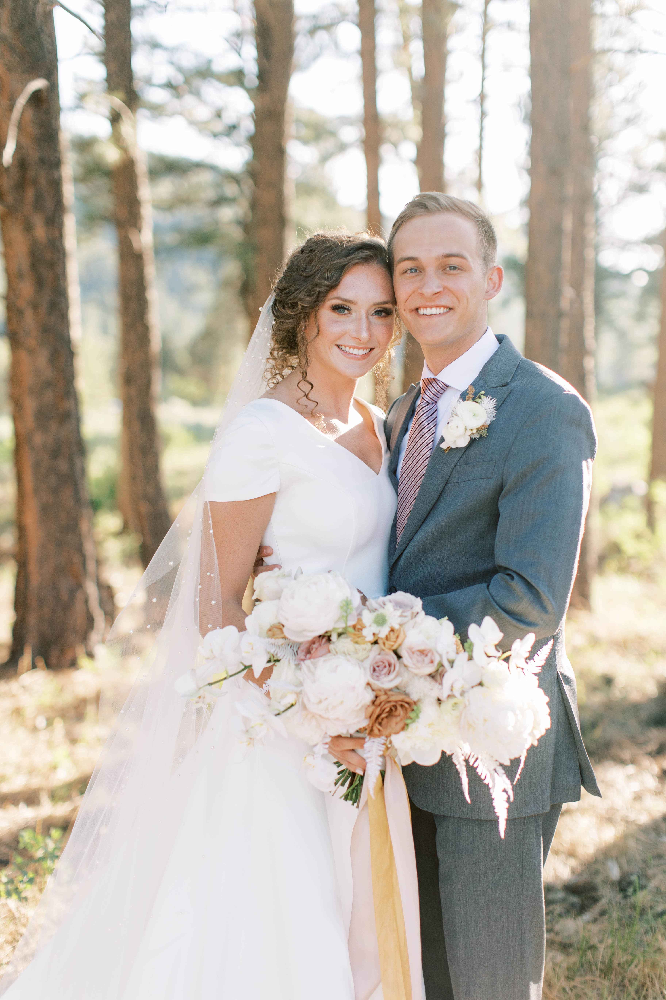

I grew up in Spanish Fork, Utah. I am the oldest of three kids and channeled the leadership I learned at home into my duties as lacrosse team captain. Between church, school, family, work, and lacrosse, I stayed busy enough that my childhood flew by too quickly.
After graduating high school, I packed two suitcases, an introductory Russian language book, and a big coat, and set out to serve a mission in Kyiv, Ukraine. COVID-19 made that experience even more exciting than I was anticipating.
Upon returning home, I began my college education at BYU and got married to my best friend. We love Provo and love adventures together.
Below are some pictures and a video of the people most important to me.
After graduating high school, I packed two suitcases, an introductory Russian language book, and a big coat, and set out to serve a mission in Kyiv, Ukraine. COVID-19 made that experience even more exciting than I was anticipating.
Upon returning home, I began my college education at BYU and got married to my best friend. We love Provo and love adventures together.
Below are some pictures and a video of the people most important to me.
Ellie and me, married in July of 2021.

Our wedding highlights video.
My siblings, Haley (18) and Chase (15), and my dad.
 .
. 
The best friends ever.
 .
. 
Back to top